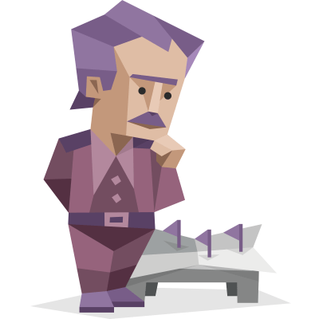

The Myer-Briggs test is a test that gives us insights into out personality type, strengths, and preferences. It was developed by Isabel Myers, and Katherine Briggs, hence the name Myer-Briggs test.
Personality Type: Architect
Traits: Introverted – 82%, Intuitive – 55%, Thinking – 58%, Judging – 53%, Turbulent – 60%
Role: Analyst
Strategy: Constant Improvement